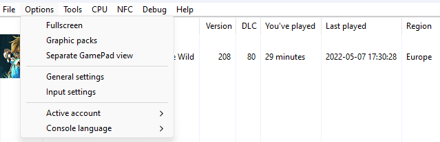

Recommended configuration :
For Cemu, the recommended configuration is :
- OS : Windows 10 (x64) or Windows 11 (x64)
- CPU : Intel i5 10400, equivalent (AMD Ryzen 5 4500), or better
- GPU : GTX 1070, or better
- RAM : 6GB, or more
- System Package : Microsoft Visual C++ 2017 X64 Redistributable
- Storage : Over 2 or 3 GB to keep free space.
Download
You can grab cemu 1.26.2f from here
Once you downloaded it, extract it in the folder of your choice.
It should look like this :
Then you can go forward the next step.
First Launch
At Cemu first launch, you have this window :
In "Game path", click "Browse" and locate your installed decrypted game ROM :
After that, in "Graphics Packs" click "Download community graphic packs"
For finishing this step, click "Next" two times, and Cemu main window should open.
General Settings
Open up the General settings menu. Then in the graphics tab, under the Graphics API, select Vulkan. Then check the Async Shader Compiler case, and select two times Bilinear.
Input Setup
To setup input, go into the option drop-down menu, and click Input Settings :

Then, if you have a XBOX controller, a DS4Windows XBOX emulated controller, or a DualSenseX XBOX Emulated controller, copy the following settings :

If you only have a Ps4 or Ps5 controller, search for DS4Windows, and install it. It should emulate a XBOX controller. Then copy the settings from above.
End Words
If your here, you have succeffully setuped Cemu ! If you want to play Breath of the Wild, Cemu's most played game,
you can jump to the Breath of the Wild section of this website from the link in the navbar above, or here